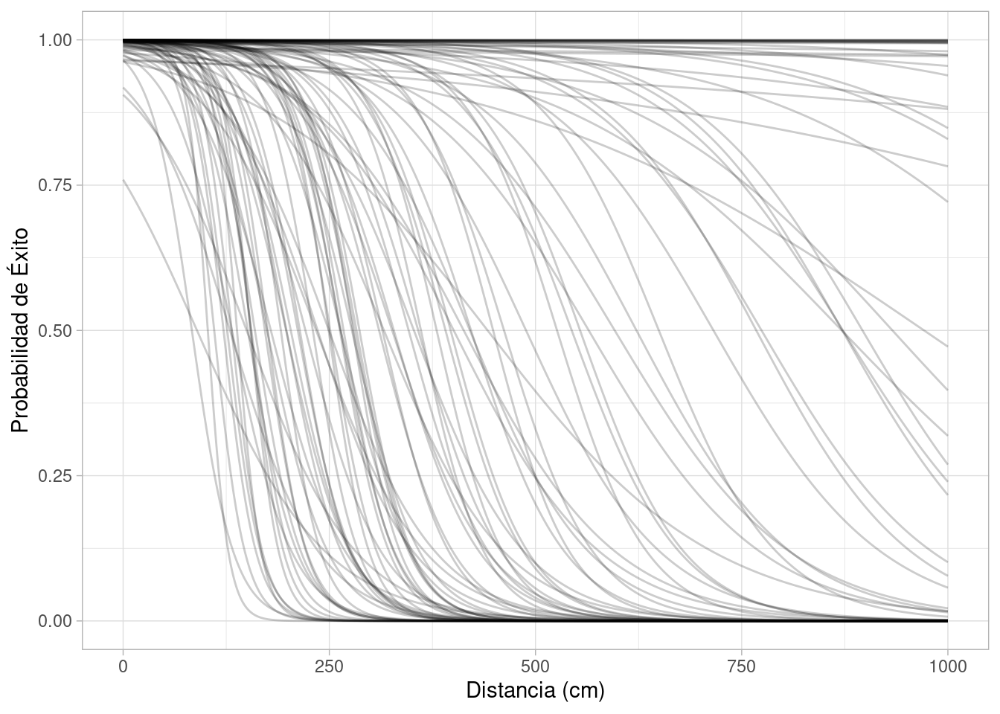
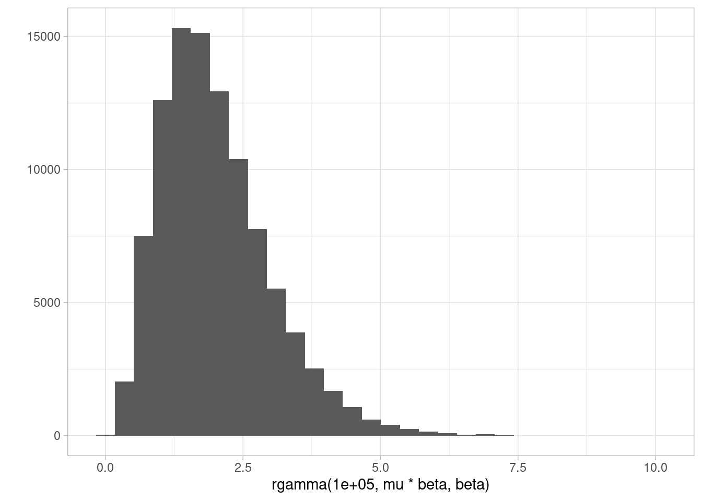
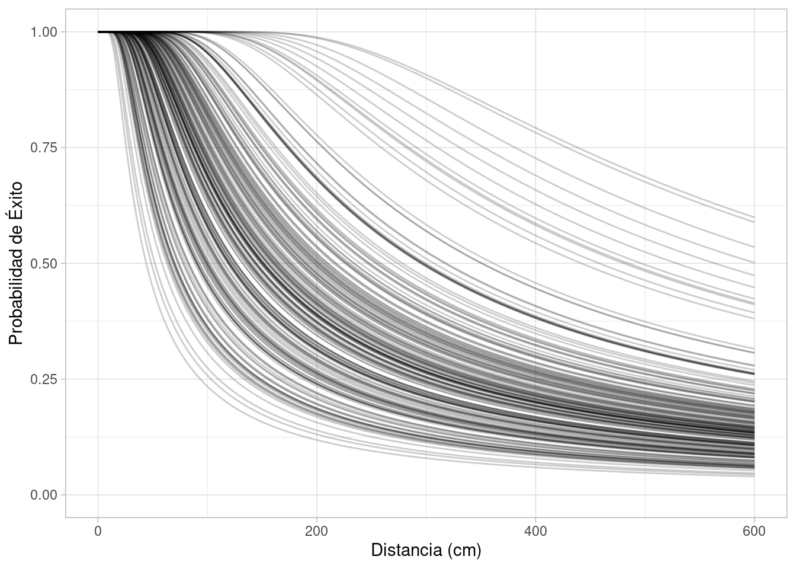

Código
grViz("
digraph {
graph [ranksep = 0.3, rankdir = LR]
node [shape=circle]
U
node [shape=plaintext]
H
W
edge [minlen = 3]
H -> W
U -> W
}
")#, width = 200, height = 50)En esta sección veremos las primeras componentes que podemos utilizar para hacer modelación, en particular regresión lineal y logística. Lo haremos en el contexto de nuestro flujo de trabajo que incluye establecer claramente un modelo causal.
Es posible obtener buenas predicciones con modelos estadísticos genéricos sin tener una explicación de cómo funciona el fenómeno que estamos modelando. Estos modelos, aunque pueden resultar en predicciones muy buenas y ser útiles, pueden ser riesgosos si se interpretan fuera de un contexto teórico con supuestos claros.
El primer ejemplo es de nuestra referencia de McElreath (2020): los epicilos planetarios del modelo geocéntrico para explicar el movimiento retrógrado de planetas en el cielo. Este modelo fue exitoso y muy preciso para calcular las posiciones futuras de los planetas en el cielo, pero sus fundamentos eran incorrectos: no es posible interpretar este modelo por sí solo para entender cómo funciona el sistema solar.
Modelos genéricos como regresión lineal o logística, métodos basados en árboles, redes neuronales típicamente caen en esta categoría de modelos de tipo “geocéntrico”: aunque pueden ser efectivos para predecir, debemos ser cuidadosos en su interpretación en términos de causas, efectos, y mecanismos del fenómeno que nos interesa.
Podemos aplicar con éxito estas componentes de modelación si entendemos su papel: estos modelos genéricos no contienen o nos dan causas o mecanismos por sí solos, pero pueden ayudarnos extraer información causal bajo los supuestos apropiados.
En este ejemplo, introducimos notación para representar modelos, usaremos posteriores con varios parámetros, y veremos cómo construir y aplicar modelos lineales, todo desde el punto de vista de nuestro flujo de trabajo.
En este ejemplo de McElreath (2020) queremos describir la relación entre peso y estatura de adultos de una población relativamente homogénea. Nuestro modelo causal es como sigue:
grViz("
digraph {
graph [ranksep = 0.3, rankdir = LR]
node [shape=circle]
U
node [shape=plaintext]
H
W
edge [minlen = 3]
H -> W
U -> W
}
")#, width = 200, height = 50)Nótese que no consideramos \(W\to H\), porque podemos pensar en varias intervenciones que podrían cambiar el peso por no cambian la estatura. Por otro lado, es difícil pensar en alguna intervención que cambie la estatura pero no cambie el peso de una persona. Adicionalmente, hay otros factores desconocidos no observados \(U\) que afectan el peso de cada persona adicionalmente a su estatura.
Ahora pasamos la modelo generativo. Supondremos que el peso de una persona adulta depende de su estatura de manera lineal, de forma que podemos escribir:
\[W = \alpha + \beta H + U\] Como \(U\) no es observada, tenemos que definir cómo generar esta variable. Una distribución natural para esta variable es una distribución normal con media 0 y desviación estándar \(\sigma\) no conocida, que escribimos como \(U\sim N(0,\sigma)\). Tenemos entonces que dados los valores \(\alpha\) y \(\beta\),
\[E[W|H] = \alpha + \beta H,\] así que el valor esperado del peso de una persona, dada su estatura, es una función lineal de la estatura. La variable \(U\) representa la variabilidad en peso alrededor de este valor esperado. Usamos la distribución normal considerando que es una agregación de varias perturbaciones pequeñas, no relacionadas con estatura, que afectan el peso de una persona (aunque este supuesto también tiene que validarse).
Adicionalmente, tenemos que hacer supuestos acerca del proceso generador para la estatura \(H\). Por el momento, y para ejemplificar, supondremos que la estatura es una variable normal con media en 160 cm y desviación estándar de 10cm.
Empezamos a escribir nuestro modelo generativo:
sim_peso <- function(n= 10, alpha, beta, sigma){
# simular estatura
H <- rnorm(n, 160, 10)
# simular perturbación de peso
U <- rnorm(n, 0, sigma)
# regresión lineal de peso dado estatura
W <- alpha + beta * H + U
tibble(H, W)
}Podemos checar nuestro modelo generativo con simulaciones predictivas a priori: generamos una muestra y checamos con el conocimiento del área:
set.seed(9)
sim_peso(100, alpha = 0, beta = 0.5, sigma = 5) |>
ggplot(aes(x = H, y = W)) +
geom_point() +
labs(x = "Estatura (cm)", y = "Peso (kg)")Podemos escribir este generativo siguiendo el código de la función de arriba. Si cada persona la denotamos por un índice \(i\) entonces:
\[ \begin{align} W_i &= \alpha + \beta H_i + U_i \\ U_i &\sim N(0,\sigma) \\ H_i &\sim N(160, 10) \end{align} \] De lado izquierdo están las variables, del lado derecho las definiciones, igualdad significa una relación determinística y \(\sim\) significa “se distribuye como”.
Ahora podemos plantear nuestra pregunta inicial en términos de este modelo: nos interesa describir cómo cambia el peso esperado de una persona dependiendo de su estatura, es decir, describir la recta
\[ \alpha + \beta H\] Con esto hemos terminado los primeros paso de nuestro flujo (modelo causal, modelo generativo, cantidad a estimar).
Nuestro método de estimación es bayesiano, así que podemos ser más específicos y decir que nos interesa la distribución posterior de \(\alpha,\beta\) dado datos observados. Otra manera de decir esto es que nos interesa describir la posterior de la recta \(\alpha + \beta H\).
Nótese en particular que en este ejemplo no nos interesa el proceso generador de \(H\), y dado nuestro diagrama causa, podemos considerar el análisis condicional a los valores que observamos de estatura.
Ahora podemos plantear nuestra estrategia de modelación estadística. Tenemos tres parámetros desconocidos \(\alpha,\beta,\sigma\), y tenemos por la regla de bayes la posterior está dada por:
\[p(\alpha,\beta,\sigma|W_i,H_i)\propto p(W_i|H_i, \alpha,\beta,\sigma)p(\alpha,\beta,\sigma)\] De modo que sólo nos interesa entender como es el peso condicional a la estatura, y por eso nuestra verosimilitud sólo considera \(W_i\) condicional a \(H_i\) (desde el punto de vista del diagrama, nos interesa modelar el nodo \(W\). En otros casos, quizá buscaríamos modelar la distribución conjunta de \(W_i,H_i\).
Ahora tenemos que poner distribuciones a priori \(p(\alpha, \beta,\sigma)\) para los parámetros desconocidos, y continuar con nuestro flujo de modelación haciendo verificaciones a priori.
La propuesta de distribuciones a priori depende de manera cercana de nuestras verificaciones a prior, como veremos más adelante. En general no existen distribuciones a priori “correctas”, sino justificables desde el punto de vista del conocimiento del área.
Los chequeos a priori nos permite entender las consecuencias de nuestras decisiones acerca de las iniciales. Nótese que todo este trabajo se hace antes de ver los datos, lo que implica que no estamos buscando “sacar el resultado que queremos” de los datos.
En primer lugar, haremos este trabajo más fácil si parametrizamos la recta de regresión de la siguiente manera, donde restamos a la estatura un valor típico de la distribución de estaturas (también puede usarse la media los datos, más comunmente, pero en este ejemplo tomamos un valor fijo para simplificar la explicación):
\[E[W|H] = \alpha + \beta (H - 160)\]
Las apriori o iniciales expresan conocimiento del área (incluyendo las unidades que se están utilizando), y actúan como restricciones suaves. Supondremos que peso está en kilogramos y estatura en centímetros.
Cuando \(H=160\) esperamos que \(W\) esté alrededor de 50-70 kg, así que podemos centrar \(\alpha\) en 60. Las unidades de \(\alpha\) son kg. Una inicial (verificaremos dentro de un momento esa decisión) puede ser \(\alpha\sim N(60, 10)\). Recordemos que esto implica que \(\alpha\) están dentre 60 - 2(10) = 40 y 60 + 10(2) = 80 con probabilidad 0.95, lo cual es considerable pero no excesivamente amplio para una persona de estatura 160cm.
Si \(\alpha\) es está alrededor de 60, la constante de proporcionalidad \(\beta\) debe ser positiva, y no muy lejana de un valor entre 0 y 2. La razón es que no tiene sentido esperar que un aumento de 10 cm tenga un aumento esperado de peso de 20 kilos, por ejemplo. Podríamos poner una inicial como \(\beta\sim N^+(0, 1)\) (normal truncada en 0) por ejemplo. Esta distribución tiene los siguientes percentiles:
quantile(rnorm(10000, 0, 1) |> abs(), probs = seq(0, 1, 0.1)) |>
round(3) 0% 10% 20% 30% 40% 50% 60% 70% 80% 90% 100%
0.000 0.124 0.251 0.383 0.518 0.673 0.839 1.032 1.269 1.618 3.818 Finalmente, tenemos que poner una inicial para \(\sigma\). Debe ser positiva, y representa la variabilidad que hay en el peso que no se debe a la estatura. Una inicial razonable es \(\sigma\sim N^+(0, 20)\), por ejemplo.
Quedamos entonces con:
\[ \begin{align} W_i &= \alpha + \beta (H_i - 160) + U_i \\ U_i &\sim N(0,\sigma) \\ \alpha &\sim N(60, 10) \\ \beta &\sim N^+(0, 1) \\ \sigma &\sim N^+(0, 20) \\ \end{align} \]
Ahora podemos simular de la a priori cuáles son las posibilidades que estamos considerando. Utilizaremos valores razonables simulados de \(H\) para hacer el análisis.
sim_peso_mod <- function(n= 10){
alpha <- rnorm(1, 60, 10)
beta <- rnorm(1, 0, 1) |> abs()
sigma <- rnorm(1, 0, 20) |> abs()
# simular estaturas y pesos
H <- rnorm(n, 160, 10)
mu_W = alpha + beta * (H - 160)
# simular perturbación de peso
U <- rnorm(n, 0, sigma)
# regresión lineal de peso dado estatura
W <- mu_W + U
tibble(alpha, beta, sigma, H, W)
}Y hacemos varias replicaciones:
sims_tbl <- map_df(1:20, function(rep) {
sim_peso_mod(100) |> mutate(rep = rep)
})Nuestros supuestos actuales se ven como sigue:
sims_tbl |>
ggplot(aes(x = H, y = W)) +
geom_point() +
geom_abline(aes(intercept = alpha - 160 * beta, slope = beta), data = sims_tbl, color = "red") +
labs(x = "Estatura (cm)", y = "Peso (kg)") +
facet_wrap(~rep)**Observación*: Esto parece ser razonable, aunque algunas replicaciones son algo extremas (muy poca variabilidad de peso, una relación muy débil o. muy fuerte entre estatura y peso). Comenzaremos con este modelo y seguiremos explorando sus consecuencias.
Nótese que en esta situación, un punto de vista que aparentemente es “conservador” en efecto pone peso en resultados que son infactibles del todo. Por ejemplo, si pusiéramos \(\beta\sim N^+(0,100)\) y \(\sigma\sim N^+(0, 1000)\), bajo el argumento de que no tenemos información acerca de \(\beta\) o \(\sigma\), obtendríamos:
sim_peso_mod_mal <- function(n= 10){
alpha <- rnorm(1, 60, 10)
beta <- rnorm(1, 0, 100) |> abs()
sigma <- rnorm(1, 0, 1000) |> abs()
# simular estaturas y pesos
H <- rnorm(n, 160, 10)
mu_W = alpha + beta * (H - 160)
# simular perturbación de peso
U <- rnorm(n, 0, sigma)
# regresión lineal de peso dado estatura
W <- mu_W + U
tibble(alpha, beta, sigma, H, W)
}
sims_mal_tbl <- map_df(1:20, function(rep) {
sim_peso_mod_mal(100) |> mutate(rep = rep)
})
sims_mal_tbl |>
ggplot(aes(x = H, y = W)) +
geom_point() +
geom_abline(aes(intercept = alpha - 160 * beta, slope = beta), data = sims_mal_tbl, color = "red") +
labs(x = "Estatura (cm)", y = "Peso (kg)") +
facet_wrap(~rep)Esta es una prueba inicial fallida. Regresaremos a este ejemplo más adelante. En este ejemplo particular que es muy simple y como veremos no es grave permitir algunos resultados algo extremos.
Es riesgoso permitir valores de las apriori que no son consistentes con el conocimiento del área. Cuando tenemos muchos datos y relativamente pocos parámetros no es muy importante, pero conforme vayamos avanzando veremos que utilizar supuestos no realistas (como distribuiciones no informativas para los parámetros) tiene consecuencias considerables.
Aunque en este punto es posible todavía hacer una aproximación por rejilla (sólo tenemos tres parámetros), escribiremos el modelo en Stan y simularemos de la posterior con MCMC (recuerda que más tarde explicaremos este proceso).
El modelo en Stan se puede escribir como sigue:
library(cmdstanr)
mod_peso <- cmdstan_model("./src/peso-estatura-1.stan")
print(mod_peso)data {
int<lower=0> N;
vector[N] h;
vector[N] w;
}
parameters {
real alpha;
real <lower=0> beta;
real <lower=0> sigma;
}
transformed parameters {
vector[N] w_media;
// determinístico dado parámetros
w_media = alpha + beta * (h - 160);
}
model {
// partes no determinísticas
w ~ normal(w_media, sigma);
alpha ~ normal(60, 10);
beta ~ normal(0, 1);
sigma ~ normal(0, 20);
}Una vez que escribimos nuestro modelo, hacemos nuestra siguiente verificación a priori: dados los supuestos del modelo generativo, ¿nuestro estimador funciona apropiadamente para responder la pregunta de interés?
Utilizaremos una muestra de 350 personas simulada de nuestro proceso generador de datos. En cada caso, buscamos correr nuestro modelo y checar que nuestra estimación de la recta de regresión es consistente con los valores que utilizamos para generar los datos.
set.seed(881)
sims_inicial_check_tbl <- map_df(1:10, function(rep) {
sim_peso_mod(352) |> mutate(rep = rep)
}) |> nest(datos_sim = c(H, W))
sims_tbl# A tibble: 2,000 × 6
alpha beta sigma H W rep
<dbl> <dbl> <dbl> <dbl> <dbl> <int>
1 61.0 0.203 22.9 165. 37.1 1
2 61.0 0.203 22.9 176. 52.4 1
3 61.0 0.203 22.9 154. 37.2 1
4 61.0 0.203 22.9 162. 70.2 1
5 61.0 0.203 22.9 156. 22.5 1
6 61.0 0.203 22.9 158. 54.8 1
7 61.0 0.203 22.9 173. 77.1 1
8 61.0 0.203 22.9 174. 56.9 1
9 61.0 0.203 22.9 150. 41.4 1
10 61.0 0.203 22.9 150. 41.6 1
# ℹ 1,990 more rowsEn la siguiente gráfica vemos un comportamiento razonable de nuestro proceso de estimación. Recuerda que cada punto negro representa una simulación de la posterior, y el punto rojo es el valor que usamos para hacer la simulación de cada recuadro:
Ojo: los ejes de los recuadros varían con la simulación
# fig-cap: Posterior para datos simulados
datos_check_tbl <- sims_inicial_check_tbl |>
select(rep, post_tbl) |>
unnest(post_tbl)
ggplot(datos_check_tbl, aes(x = alpha, y = beta)) +
geom_point(alpha = 0.2) +
labs(x = "alpha", y = "beta") +
geom_point(data = sims_inicial_check_tbl, color = "red", size = 3) +
facet_wrap(~ rep, scales = "free") Esta gráfica también podemos hacerla como sigue, usando rectas:
# nota: el intercept en geom_abline es la ordenada al origen
# mientras que la alpha es valor de la recta para h = 160
datos_check_tbl |>
ggplot() +
geom_abline(aes(intercept = alpha - beta * 160, slope = beta),
alpha = 0.5, colour = "gray") +
facet_wrap(~ rep, scales = "free") +
scale_x_continuous(limits = c(130, 200)) +
scale_y_continuous(limits = c(0, 200)) +
geom_abline(data = sims_inicial_check_tbl,
aes(intercept = alpha - beta * 160,
slope = beta), color = "red", linewidth = 1.05)Esta prueba computacional tiene buenos resultados: en general, la posterior se concentra alrededor del valor verdadero de cada simulación. Ahora podemos proceder a cargar los datos reales y hacer una simulación de la posterior.
Cargamos los datos y producimos simulaciones de la posterior.
set.seed(81)
datos_tbl <- read_delim("../datos/Howell1.csv", delim = ";") |>
filter(age >= 18)Rows: 544 Columns: 4
── Column specification ────────────────────────────────────────────────────────
Delimiter: ";"
dbl (4): height, weight, age, male
ℹ Use `spec()` to retrieve the full column specification for this data.
ℹ Specify the column types or set `show_col_types = FALSE` to quiet this message.data_list <- list(
N = nrow(datos_tbl),
h = datos_tbl$height,
w = datos_tbl$weight
)
# correr modelo en Stan
mod_peso_ajuste <- mod_peso$sample(
data = data_list,
iter_sampling = 2000,
refresh = 0)Running MCMC with 4 sequential chains...
Chain 1 finished in 0.4 seconds.
Chain 2 finished in 0.4 seconds.
Chain 3 finished in 0.4 seconds.
Chain 4 finished in 0.4 seconds.
All 4 chains finished successfully.
Mean chain execution time: 0.4 seconds.
Total execution time: 1.7 seconds.La posterior de los parámetros de la recta se ve como siguen:
sims_peso_post_tbl <- mod_peso_ajuste |>
as_draws_df() |>
select(.draw, alpha, beta, sigma) Warning: Dropping 'draws_df' class as required metadata was removed.ggplot(sims_peso_post_tbl)+
geom_point(aes(x = alpha, y = beta)) Y un resumen simple está dado por:
mod_peso_ajuste$summary(c("alpha", "beta", "sigma")) |>
mutate(across(where(is.numeric), ~ round(.x, 2)))# A tibble: 3 × 10
variable mean median sd mad q5 q95 rhat ess_bulk ess_tail
<chr> <dbl> <dbl> <dbl> <dbl> <dbl> <dbl> <dbl> <dbl> <dbl>
1 alpha 48.4 48.4 0.28 0.28 47.9 48.8 1 4900. 5333.
2 beta 0.63 0.63 0.03 0.03 0.58 0.68 1 4700. 5066.
3 sigma 4.26 4.25 0.16 0.16 4 4.53 1 5690. 5133.Observa que los resúmenes marginales (variable por variable) no cuentan la historia completa de la posterior. En nuestro ejemplo, \(\alpha\) y \(\beta\) están correlacionadas en la posterior como muestra la gráfica anterior. Por eso cuando queremos calcular resúmenes de cantidades en las que influyen varios parámetros, es importante trabajar con las simulaciones conjuntas de los parámetros.
Puedes ver que en realidad no es posible calcular la distribución de cantidades como \(\alpha + 10\beta\), por ejemplo, a partir de la información de la tabla de arriba: por ejemplo, la varianza de esta suma no es simplemente la suma de las varianzas
Dado nuestro modelo, ahora podemos generar cómo se verían observaciones nuevas: en este caso, si tuviéramos una estatura, ¿cómo sería el peso de esa persona? Para esto tenemos que tener en cuenta tanto la posterior de los parámetros como el modelo de los datos.
En primer lugar, la posterior de la relación lineal es (cada línea de esta gráfica es una simulación de la posterior):
ggplot(sims_peso_post_tbl) +
geom_abline(aes(intercept = alpha - beta * 160, slope = beta),
colour = "gray", alpha = 0.1) +
scale_x_continuous(limits = c(130, 180)) +
scale_y_continuous(limits = c(20, 70)) Esto nos indican los valores esperados para estatura. Para la predictiva posterior, también tenemos que considerar dónde pueden aparecer individuos. Para simular a una estatura fija, por ejemplo, hacemos lo sugiente:
sim_pred_post <- function(n, sims_peso_post_tbl, h) {
# extraer parámetros de la posterior
pars <- slice_sample(sims_peso_post_tbl, n = n, replace = TRUE)
# simular pesos
sims_tbl <- map_df(h, function(h){
w_media <- pars$alpha + pars$beta * (h - 160)
w <- rnorm(n, w_media, pars$sigma)
tibble(rep = 1:n, h = h, w_media = w_media, w = w)
})
sims_tbl
}Las predictivas posteriores para las estaturas \(h = 160\) y \(h=150\) son:
comp_ppost_tbl <- sim_pred_post(5000, sims_peso_post_tbl, c(150, 160))
ggplot(comp_ppost_tbl, aes(x = w, fill = factor(h))) +
geom_histogram(bins = 50, alpha = 0.5, position = "identity") que como vemos presentan variabilidad considerable más allá de la diferencia de valores esperados. Podemos calcular por ejemplo cuál es la probabilidad de que una persona de 150 cm sea más alta que una de 170 cm:
comp_ppost_tbl |>
select(-w_media) |>
pivot_wider(names_from = h, values_from = w) |>
summarise(prop = mean(`150` > `160`))# A tibble: 1 × 1
prop
<dbl>
1 0.143Y también es más útil calcular la distribución de la diferencia de pesos entre personas de 150 y 160 cm:
comp_ppost_tbl |>
select(-w_media) |>
pivot_wider(names_from = h, values_from = w) |>
mutate(diferencia = `160` - `150`) |>
ggplot(aes(x = diferencia)) +
geom_histogram(bins = 50, alpha = 0.5, position = "identity") +
labs(x = "Diferencia de pesos 160 - 150cm")En contraste, si comparamos las estaturas medias de cada grupo, que no incluyen variabilidad individual más allá de la producida por la estatura:
ggplot(comp_ppost_tbl, aes(x = w_media, fill = factor(h))) +
geom_histogram(bins = 100, alpha = 0.5, position = "identity") +
labs(x = "Media de pesos")Prácticamente tenemos seguridad que la media de pesos de los individuos de 150 cm es menor que la de los de 160 cm.
Es importante no confundir el contraste a nivel individuo que hicimos arriba, y el que hicimos a nivel de medias de grupos. Los grupos tienen claramente medias diferentes, pero las distribuciones de individuos tienen traslape considerable.
Podemos también resumir la distribución predictiva para distintas estaturas:
resumen_ppost_tbl <- sim_pred_post(20000, sims_peso_post_tbl,
h = seq(130, 180, 2.5)) |>
group_by(h) |>
summarise(q5 = quantile(w, 0.05),
q95 = quantile(w, 0.95),
q_media_5 = quantile(w_media, 0.05),
q_media_95 = quantile(w_media, 0.95)) En nuestra gráfica anterior tendríamos entonces nuestra recta junto con rangos de 90% para la estatura de los individuos:
ggplot(sims_peso_post_tbl) +
geom_abline(aes(intercept = alpha - beta * 160, slope = beta),
colour = "gray", alpha = 0.01) +
scale_x_continuous(limits = c(130, 180)) +
scale_y_continuous(limits = c(10, 80)) +
geom_ribbon(data = resumen_ppost_tbl,
aes(x = h, ymin = q_media_5, ymax = q_media_95),
fill = NA, colour = "gray") +
geom_ribbon(data = resumen_ppost_tbl,
aes(x = h, ymin = q5, ymax = q95), fill = NA, colour = "red")Además de ser útil para calcular cantidades de interés de manera natural, la predictiva posterior también está sujeta a crítica y validación. Veremos más de este punto, pero la idea básica es la siguiente:
Una vez que tenemos la posterior dados los datos:
Diferencias sistemáticas entre datos observados y datos simulados de la predictiva posterior indican fallas del modelo o áreas donde puede mejorar.
Hay muchas variaciones de este tipo de verificaciones. En nuestro caso podemos hacer manualmente este proceso una vez que tenemos simulaciones de la posterior, tomando las mismas estaturas de los datos y simulando datos del modelo para el peso.
sims_check_post <- sim_pred_post(10, sims_peso_post_tbl,
h = datos_tbl$height) |>
select(-w_media)
sims_check_post <- bind_rows(sims_check_post,
datos_tbl |> mutate(rep = 11) |> select(rep, h = height, w = weight)) |>
mutate(rep = digest::digest2int(as.character(rep), seed = 992))
ggplot(sims_check_post) +
geom_point(aes(x = h, y = w), alpha = 0.2) + facet_wrap(~ rep)¿Puedes reconocer dónde están los datos? Si hay desajustes graves y sistemáticas, deberías poder detectarlos en una gráfica de este tipo. Veremos más de este tipo de verificaciones en el curso.
# Respuesta
digest::digest2int("11", seed = 992)Entre los adultos humanos, hombres y mujeres tienen distintas distribuciones de peso y estatura. La variable \(S\) (sexo) influye tanto en estatura como en peso. La relación la consideramos causalmente partiendo en \(S\):
grViz("
digraph {
graph [ranksep = 0.3, rankdir = LR]
node [shape=circle]
U
V
Z
node [shape=plaintext]
H
W
S
edge [minlen = 3]
H -> W
U -> W
S -> H
S -> W
V -> H
Z -> S
}
", width = 200, height = 50)Omitiendo del diagrama las variables no observadas que también son causas únicamente de \(S\) y \(W, H\):
grViz("
digraph {
graph [ranksep = 0.3, rankdir = LR]
node [shape=circle]
node [shape=plaintext]
H
W
S
edge [minlen = 3]
H -> W
S -> H
S -> W
}
", width = 200, height = 50)Si queremos saber cómo influye el sexo en el peso, este diagrama indica que hay dos tipos de preguntas que podemos hacer:
Aunque tenemos un solo modelo causal, pueden construirse distintos modelos estadísticos para contestar cada pregunta. El modelo causal nos dice que si no tenemos causas comunes de \(S\) y \(H\) y \(W\), entonces podemos estimar el efecto total de \(S\) sobre \(W\) (esto lo formalizaremos más adelante).
Empezamos con el efecto total. Para esto, podemos usar el modelo lineal e ignorar la estatura, donde \(S_i=2\) si el individuo \(i\) es hombre y \(S_i=1\) si el individuo \(i\) es mujer.
\[ \begin{align} W_i &\sim N(\alpha_{S_i}, \sigma)\\ \alpha_1,\alpha_2 &\sim N(60, 10) \\ \sigma &\sim N^+(0, 20) \\ \end{align} \] Nótese que tenemos dos posibles medias para el peso, una para hombres y otra para mujeres. La estatura no nos importa porque la pregunta es acerca del efecto total de sexo sobre estatura. Para las iniciales podemos seguir un argumento similar al de arriba.
Nota: esta parametrización es más conveniente que utilizar un indicador (o dummy) de sexo en términos de interpetación y en términos de poner iniciales acordes con el conocimiento del área, aunque estadísticamente son equivalentes.
El modelo generador simplificado para este caso puede ser:
sim_peso_mod_s <- function(S, alpha, sigma){
n <- length(S)
W <- rnorm(n, alpha[S], sigma)
tibble(alpha_1 = alpha[1], alpha_2 = alpha[2],
sigma, S = S, W = W)
}Dado este modelo generador, ¿cuál es el efecto causal de sexo? Tenemos que definir esta cantidad en términos del modelo. En nuestro caso, definiremos el efecto causal promedio sobre la población, que definimos como la diferencia promedio de estaturas de dos poblaciones: una compuesta enteramente por hombres y otra por mujeres.
set.seed(2021)
# Fjamos mismos valores de los parámetros para simular dos
# poblaciones
sim_hombres <- sim_peso_mod_s(rep(2, 1000), c(55, 70), 10)
sim_mujeres <- sim_peso_mod_s(rep(1, 1000), c(55, 70), 10)
mean(sim_hombres$W - sim_mujeres$W)[1] 14.75203Ahora generamos una población con estos parámetros y vemos si podemos recuperar el efecto causal promedio sobre la población. Nuestro modelo es como definimos arriba:
library(cmdstanr)
mod_peso <- cmdstan_model("./src/peso-estatura-2.stan")
print(mod_peso)data {
int<lower=0> N;
vector[N] w;
array[N] int s;
}
parameters {
array[2] real alpha;
real <lower=0> sigma;
}
transformed parameters {
}
model {
// modelo para peso
w ~ normal(alpha[s], sigma);
// también se puede escribir como
// for (i in 1:N) {
// w[i] ~ normal(alpha[s[i]], sigma);
// }
// iniciales
alpha ~ normal(60, 10);
sigma ~ normal(0, 20);
}Simulamos datos y ajustamos el modelo, usando los mismos parámetros fijos:
S_sim <- sample(c(1,2), 1000, replace = TRUE)
datos_sim_tbl <- sim_peso_mod_s(S_sim, c(55, 70), 10)mod_2_fit <- mod_peso$sample(
data = list(N = nrow(datos_sim_tbl),
s = datos_sim_tbl$S,
w = datos_sim_tbl$W),
refresh = 0, seed = 221
)Running MCMC with 4 sequential chains...
Chain 1 finished in 0.1 seconds.
Chain 2 finished in 0.1 seconds.
Chain 3 finished in 0.1 seconds.
Chain 4 finished in 0.1 seconds.
All 4 chains finished successfully.
Mean chain execution time: 0.1 seconds.
Total execution time: 0.7 seconds.mod_2_fit$summary(c("alpha", "sigma"))# A tibble: 3 × 10
variable mean median sd mad q5 q95 rhat ess_bulk ess_tail
<chr> <dbl> <dbl> <dbl> <dbl> <dbl> <dbl> <dbl> <dbl> <dbl>
1 alpha[1] 55.0 55.0 0.435 0.429 54.2 55.7 1.00 4611. 2866.
2 alpha[2] 70.9 70.9 0.435 0.444 70.2 71.6 1.00 4350. 2891.
3 sigma 9.77 9.76 0.223 0.227 9.41 10.1 1.00 4210. 3013.Nótese que la diferencia de medias poblacionales es de alrededor de 15 cm, que es lo que esperábamos según el cálculo de arriba. Podemos replicar el cálculo que hicimos arriba directamente usando simulación:
Esto es fácil hacerlo directamente en Stan, pero en este ejemplo lo calcularemos manualmente:
sims_post_tbl <- mod_2_fit$draws() |> as_draws_df() |>
as_tibble()
simular_diferencia_post <- function(sims_post_tbl){
# Simulamos parámetros de la posterior
pars <- sample_n(sims_post_tbl, 1) |>
select(starts_with("alpha"), sigma)
# Simulamos datos
sims_hombres <- sim_peso_mod_s(rep(2, 1000),
alpha = c(pars$`alpha[1]`, pars$`alpha[2]`), pars$sigma)
sims_mujeres <- sim_peso_mod_s(rep(1, 1000),
c(pars$`alpha[1]`, pars$`alpha[2]`), pars$sigma)
diferencia <- mean(sims_hombres$W - sims_mujeres$W)
# Calculamos la diferencia de medias
tibble(diferencia = diferencia) |> bind_cols(pars)
}simular_diferencia_post(sims_post_tbl)# A tibble: 1 × 4
diferencia `alpha[1]` `alpha[2]` sigma
<dbl> <dbl> <dbl> <dbl>
1 15.3 55.5 70.4 9.60Y ahora calculamos el resumen de interés, que es la posterior del contraste o diferencia entre las dos poblaciones simuladas. Comparamos con la línea en rojo que es la cantidad que establecimos a estimar:
map_df(1:4000, ~ simular_diferencia_post(sims_post_tbl) |>
mutate(rep = .x)) |>
ggplot(aes(x = diferencia)) +
geom_histogram(bins = 50) +
labs(x = "Efecto de sexo en estatura hombres vs mujeres (cm)") +
geom_vline(xintercept = mean(sim_hombres$W - sim_mujeres$W),
color = "red", linewidth = 1.5)Puedes repetir este ejercicio para distintos valores de los parámetros, como hicimos en los ejemplos de arriba.
Ahora usamos los datos reales y calculamos el estimador que probamos arriba.
mod_2_fit <- mod_peso$sample(
data = list(N = nrow(datos_tbl),
s = datos_tbl$male + 1,
w = datos_tbl$weight),
refresh = 0, seed = 221
)Running MCMC with 4 sequential chains...
Chain 1 finished in 0.1 seconds.
Chain 2 finished in 0.0 seconds.
Chain 3 finished in 0.1 seconds.
Chain 4 finished in 0.1 seconds.
All 4 chains finished successfully.
Mean chain execution time: 0.1 seconds.
Total execution time: 0.5 seconds.Y repetimos exactamente el proceso que probamos arriba:
sims_post_tbl <- mod_2_fit$draws() |> as_draws_df() |>
as_tibble()
dif_tbl <- map_df(1:4000, ~ simular_diferencia_post(sims_post_tbl) |>
mutate(rep = .x))
dif_tbl |>
ggplot(aes(x = diferencia)) +
geom_histogram(bins = 50) +
labs(x = "Efecto de sexo en peso hombres vs mujeres (kg)") Concluimos que el efecto total de sexo sobre peso está entre unos 5.5 y 8 kg de diferencia de hombres vs mujeres.
Ejercicio: explica porqué mostrar por separado las distribuciones de poblaciones de hombres vs la de poblaciones de mujeres no da la respuesta que buscamos.
Ahora pensemos cómo podemos calcular el efecto directo de sexo sobre peso, sin tomar en cuente su influencia en la estatura. En nuestro diagrama, nos interesa sólo considerar la influencia que va directamente de sexo a peso, y no la que pasa por el camino que va a través de la estatura. Este tipo de análisis se llama a veces análisis de mediación.
La idea es bloquear el camino que va de sexo a estatura, y esto podemos hacer condicionando o estratificando por los valores de \(H\). Es decir, para cada valor de \(H\), queremos calcular cuál es la diferencia entre una población de hombres y de mujeres (con la misma estatura \(H\)). Las diferencias que encontremos no puede deberse a estatura, pues esta valor es fijo. Al estratificar por \(H\), decimos que el camino \(S\to H\to W\) está bloqueado, y refinaremos esta idea más adelante.
En términos de cantidad a estimar, quisiéramos, para cada estatura \(H\), calcular la diferencia de una población de hombres vs una de mujeres. La diferencia es el efecto directo a la estatura \(H\).
El modelo estadístico que proponemos para estimar el efecto directo es entonces:
\[ \begin{align} W_i &\sim N(\mu_i, \sigma)\\ \mu_i &= \alpha_{S_i} + \beta_{S_i} (H_i - \bar{H})\\ \alpha_1,\alpha_2 &\sim N(60, 10) \\ \beta_1,\beta_2 &\sim N^+(0, 1) \\ \sigma &\sim N^+(0, 20) \\ \end{align} \]
El contraste que queremos calcular lo podemos identificar con parámetros en el modelo. Por ejemplo, si \(\beta_1 = \beta_2\), el efecto directo, para cualquier estatura, debería ser \(\alpha_2 - \alpha_1\). Sin embargo, seguimos con nuestro camino de hacer simulación para mantener más flexibilidad y simplicidad.
Ejercicio: Haz verificaciones a priori: genera datos sintéticos, examínalos, y verifica que el modelo es capaz de recuperar el contraste de interés.
mod_peso_2 <- cmdstan_model("./src/peso-estatura-3.stan")
print(mod_peso_2)data {
int<lower=0> N;
vector[N] w;
vector[N] h;
array[N] int s;
}
transformed data {
real h_media;
h_media = mean(h);
}
parameters {
array[2] real alpha;
array[2] real<lower=0> beta;
real <lower=0> sigma;
}
transformed parameters {
array[N] real mu;
for (i in 1:N) {
mu[i] = alpha[s[i]] + beta[s[i]] * (h[i] - h_media);
}
}
model {
// modelo para peso
w ~ normal(mu, sigma);
// también se puede escribir:
//for (i in 1:N) {
// w[i] ~ normal(mu[i], sigma);
//}
alpha ~ normal(60, 10);
beta ~ normal(0, 1);
sigma ~ normal(0, 20);
}
generated quantities {
}mod_3_fit <- mod_peso_2$sample(
data = list(N = nrow(datos_tbl),
s = datos_tbl$male + 1,
h = datos_tbl$height,
w = datos_tbl$weight),
init = 0.01, step_size = 0.01, refresh = 0, seed = 221
)Running MCMC with 4 sequential chains...
Chain 1 finished in 0.3 seconds.
Chain 2 finished in 0.3 seconds.
Chain 3 finished in 0.3 seconds.
Chain 4 finished in 0.3 seconds.
All 4 chains finished successfully.
Mean chain execution time: 0.3 seconds.
Total execution time: 1.4 seconds.mod_3_fit$summary(c("alpha", "beta", "sigma")) |>
knitr::kable(digits = 2)| variable | mean | median | sd | mad | q5 | q95 | rhat | ess_bulk | ess_tail |
|---|---|---|---|---|---|---|---|---|---|
| alpha[1] | 45.17 | 45.17 | 0.45 | 0.45 | 44.45 | 45.91 | 1 | 2270.19 | 2455.26 |
| alpha[2] | 45.09 | 45.10 | 0.47 | 0.45 | 44.31 | 45.83 | 1 | 2822.98 | 2524.93 |
| beta[1] | 0.66 | 0.66 | 0.06 | 0.06 | 0.55 | 0.76 | 1 | 2109.75 | 2083.05 |
| beta[2] | 0.61 | 0.61 | 0.06 | 0.06 | 0.52 | 0.70 | 1 | 2737.57 | 2646.95 |
| sigma | 4.27 | 4.26 | 0.16 | 0.16 | 4.02 | 4.55 | 1 | 4090.86 | 2699.93 |
La diferencia entre las dos rectas parece ser chica. Eso implicaría que el efecto directo de sexo en peso es débil. Sin embargo, es mejor calcular y resumir el contraste como hemos hecho en otros ejemplos.
Repetimos exactamente el proceso que probamos arriba. Haremos los cálculos manualmente otra vez (aunque conviene más hacerlos dentro de stan):
sims_post_tbl <- mod_3_fit$draws() |> as_draws_df() |>
as_tibble()
h_media <- mean(datos_tbl$height)
# función para simular pesos
sim_peso_mod_sh <- function(S, H, alpha, beta, sigma, h_media){
n <- length(S)
W <- rnorm(n, alpha[S] + beta[S] * (H - h_media), sigma)
tibble(W = W)
}
simular_diferencia_post_2 <- function(sims_post_tbl, h){
pars <- sample_n(sims_post_tbl, 1) |>
select(starts_with(c("alpha", "beta")), sigma)
alpha <- c(pars$`alpha[1]`, pars$`alpha[2]`)
beta <- c(pars$`beta[1]`, pars$`beta[2]`)
diferencia <- numeric(length(h))
# para cada nivel de estatura especificado
for(i in seq_along(h)){
# Simulamos poblaciones
sims_hombres <- sim_peso_mod_sh(rep(2, 1000), h[i],
alpha = alpha, beta = beta, pars$sigma, h_media = h_media)
sims_mujeres <- sim_peso_mod_sh(rep(1, 1000), h[i],
alpha = alpha, beta = beta, pars$sigma, h_media = h_media)
diferencia[i] <- mean(sims_hombres$W - sims_mujeres$W)
}
tibble(diferencia = diferencia, h = h) |> bind_cols(pars)
}Por ejemplo:
simular_diferencia_post_2(sims_post_tbl, h = c(150, 170))# A tibble: 2 × 7
diferencia h `alpha[1]` `alpha[2]` `beta[1]` `beta[2]` sigma
<dbl> <dbl> <dbl> <dbl> <dbl> <dbl> <dbl>
1 1.38 150 45.2 45.9 0.610 0.502 4.25
2 -0.836 170 45.2 45.9 0.610 0.502 4.25h <- seq(130, 190, by = 5)
dif_tbl <- map_df(1:1000,
~ simular_diferencia_post_2(sims_post_tbl, h) |>
mutate(rep = .x))dif_tbl |>
ggplot(aes(x = h, y = diferencia, group = rep)) +
geom_line(alpha = 0.1) +
labs(x = "Contraste de peso hombres vs mujeres (kg)") +
geom_hline(yintercept = 0, colour = "red") Esto muestra que el efecto directo de sexo en peso es relativamente chico: la mayor parte del efecto es a través de la estatura. Existe una ligera tendencia a que los hombre de menos estatura sean más pesados, y las mujeres de más estatura sean relativamente menos pesadas, pero realmente no podemos afirmar con confianza ningún efecto claro.
Cuando agregamos una variable como estatura en el modelo de regresión, decimos que estamos estratificando por estatura. En este caso, bloqueamos el efecto causal que tiene sexo en peso a través de la estatura. El efecto causal entre los la variable sexo, que se hace dentro de cada estrato, y se expresa en los coeficientes de sexo, tiene una interpretación totalmente diferente en comparación al modelo que no incluye estatura.
Este caso está basado en el paper Gelman y Nolan (2002) y el caso de estudio de Gelman.
Queremos entender la probabilidad de éxito de putts de Golf (putts: tiros relativamente cerca del hoyo que buscan que la pelota ruede al hoyo o muy cerca de él), y cómo depende el éxito de la distancia del tiro. ¿Qué tan precisos son los profesionales a diferentes distancias? Los datos que tenemos son varios putts de Golf de profesionales a varias distancias, y para cada distancia el porcentaje de éxitos de esos putts.
Comenzaremos con el siguiente diagrama causal:
grViz("
digraph {
graph [ranksep = 0.3, rankdir = LR]
node [shape=circle]
V
Ang [label = <θ>]
U
node [shape=plaintext]
D
Y
edge [minlen = 3]
D -> V
D -> Y
V -> Y
Ang -> Y
U -> Y
{rank = same; D; V}
{rank = same; Ang; Y}
{rank = max; U}
}
")#, width = 200, height = 50)En este caso, el modelo causal es como sigue: conocemos la distancia \(D\) al hoyo en cada tiro. El éxito (\(Y=1\)) o fracaso (\(Y=0\)) depende de la distancia, junto con la velocidad a la que sale la pelota (muy alto o muy bajo puede dar un tiro fallido), y el ángulo \(\theta\) de salida. Adicionalmente, hay otros factors \(U\) que pueden afectar la probabilidad de éxito. Nótese que no escribiríamos, por ejemplo \(Y \leftarrow D\), porque la distancia no cambia causalmente con el resultado del tiro, aunque es cierto que si intervenimos en la distancia, esperaríamos obtener tasas de éxito diferentes. Igualmente, es necesario poner una flecha de \(V\) a \(D\) y \(V\) a \(Y\).
Todas estas variables antecedentes de \(Y\) interactúan para determinar el éxito de un tiro.
Cantidad a estimar: queremos conocer el efecto total de \(D\) sobre \(Y\). Esto es, queremos conocer la curva \(p(Y=1|D=d)\), que es una función de \(d\), y también hacer contrastes del tipo \(p(Y=1|D=d + 10) - p(Y = 1|D=d),\) por ejemplo.
Modelo estadístico: Nuestro diagrama causal justifica que no es necesario considerar \(V\) o \(\theta\) en el modelo, pues nos interesa el efecto total de la distancia sobre \(Y\). Esto justifica el uso de un modelo genérico usamos \(Y\) como respuesta y \(D\) como variable independiente. Intentaremos con un modelo genérico como regresión logística.
Planteamos entonces un modelo logístico:
\(p(Y = 1| D = d) = \frac{1}{1 + \exp(-\alpha - \beta d)} = h(\alpha +\beta d)\)
Y nuestro modelo es:
\[ \begin{align} Y_i &\sim Bern(p_i(D_i)) \\ p_i &= \frac{1}{1+\exp(-\alpha - \beta D_i)} \\ \end{align} \]
En términos de este modelo, queremos estimar la curva \(h(\alpha +\beta d)\), o los parámetros \(\alpha\) y \(\beta\).
Ahora construimos un modelo generativo, donde \(D\) está dada en centímetros:
simular_putts <- function(distancias, alpha, beta) {
p <- 1 / (1 + exp(-alpha - beta * distancias))
tibble(y = rbinom(length(distancias), 1, p), d = distancias) |>
select(d, y)
}Fijamos parámetros y simulamos datos:
set.seed(22)
distancias <- seq(0, 1000, 5) |> rep(each = 5)
simular_putts(distancias, 3, -0.005) |>
ggplot(aes(x = d, y = y)) +
geom_jitter(height = 0.1) +
labs(x = "Distancia (cm)", y = "Éxito") +
geom_smooth(span = 0.5)`geom_smooth()` using method = 'gam' and formula = 'y ~ s(x, bs = "cs")'Nótese que para este ejemplo utilizamos valores de \(\alpha\) y \(\beta\) fijos. Valores imposibles para golfistas profesionales, por ejemplo, podrían ser los siguientes:
set.seed(22)
distancias <- seq(0, 1000, 5) |> rep(each = 5)
simular_putts(distancias, 10, -1) |>
ggplot(aes(x = d, y = y)) +
geom_jitter(height = 0.1) +
labs(x = "Distancia (cm)", y = "Éxito") +
geom_smooth(span = 0.5)`geom_smooth()` using method = 'gam' and formula = 'y ~ s(x, bs = "cs")'Esta configuración de parámetros no es razonable, pues implicaría que sólo pueden completar los tiros a unos cuantos centímetros del hoyo. Sabemos que esto no es cierto.
Para completar nuestro modelo generativo, es necesario especificar los valores que pueden tomar estas variables. Pondremos distribuciones iniciales o a priori apropiadas para los parámetros. En este punto no hemos visto ningún dato, así que podemos experimentar para hacer una selección apropiada desde el punto de vista del conocimiento del área que tenemos actualmente.
Podemos poner por ejemplo \[\alpha \sim \text{Normal}(6, 2),\] pues sabemos a que distancias de casi cero, es muy seguro lograr el tiro (no lejos de 100% de éxito). Para la \(\beta\), consideramos que a unos 100 cm es muy probable hacer el tiro, pero a 1000 cm (10 m) la probabilidad baja considerablemente. Experimentaremos poniendo (debe ser negativa)
\[\beta \sim \text{Normal}^-(0, 0.025).\]
y ahora reescribimos nuestra función de simulación:
simular_putts <- function(distancias) {
alpha <- rnorm(1, 6, 2)
beta <- - abs(rnorm(1, 0, 0.025))
p <- 1 / (1 + exp(-alpha - beta * distancias))
tibble(y = rbinom(length(distancias), 1, p), p = p, d = distancias) |>
select(d, p, y) |>
mutate(alpha = alpha, beta = beta)
}Y podemos ver cómo se ven diversas curvas que incluye nuestro modelo:
distancias <- seq(0, 1000, 1)
map_df(1:100, \(x) simular_putts(distancias) |> mutate(id = x)) |>
ggplot(aes(x = d, y = p, group = id)) +
geom_line(alpha = 0.2) +
labs(x = "Distancia (cm)", y = "Probabilidad de Éxito")
Los casos extremos son poco creíbles (0 probabilidad a 2 metros o 100% de probabilidad a 6 metros), pero tenemos un rango razonable para las curvas. Podemos ver la curva promedio:
reps_sim <- map_df(1:1000, \(x) simular_putts(distancias) |> mutate(id = x))
resumen <- reps_sim |> group_by(d) |> summarise(p_5 = quantile(p, 0.10),
p95 = quantile(p, 0.90),
p = mean(p))
reps_sim |>
ggplot(aes(x = d, y = p)) +
#geom_line(aes(group = id), alpha = 0.2) +
labs(x = "Distancia (cm)", y = "Probabilidad de Éxito") +
geom_ribbon(data = resumen, aes(ymin = p_5, ymax = p95), alpha = 0.2) +
geom_line(data = resumen, color = "red", linewidth = 2) Una vez que estamos satisfechos con nuestro modelo (nótese que hay lugar para varias críticas), podemos proceder a calcular la distribución posterior, primero con datos simulados.
La posterior en este caso es más complicada y no tenemos una manera simple de simularla. Explicaremos más adelante cómo hacer esto (usando MCMC). Por ahora, escribiremos un programa de Stan que nos da simulaciones de la posterior. Tomaremos por el momento Stan como una caja negra, y después justificaremos este procedimiento.
#! message: false
library(cmdstanr)
mod_logistica <- cmdstan_model("./src/golf-logistico.stan")
print(mod_logistica)data {
int<lower=0> N;
array[N] int n;
vector[N] d;
array[N] int y;
}
parameters {
real alpha;
real<upper = 0> beta;
}
model {
y ~ binomial_logit(n, alpha + beta * d);
alpha ~ normal(6, 2);
beta ~ normal(0, 0.025);
}set.seed(425)
distancias <- rnorm(100, 0, 2000) |> abs()
datos <- simular_putts(distancias)
datos_mod <- datos |> group_by(d) |>
summarise(n = n(), y = sum(y)) |>
ungroup()
ajuste <- mod_logistica$sample(
data = list(N = nrow(datos_mod),
d = datos_mod$d, y = datos_mod$y, n = datos_mod$n),
refresh = 1000, init = 10, step_size = 0.01)Running MCMC with 4 sequential chains...
Chain 1 Iteration: 1 / 2000 [ 0%] (Warmup)
Chain 1 Iteration: 1000 / 2000 [ 50%] (Warmup)
Chain 1 Iteration: 1001 / 2000 [ 50%] (Sampling)
Chain 1 Iteration: 2000 / 2000 [100%] (Sampling)
Chain 1 finished in 0.1 seconds.
Chain 2 Iteration: 1 / 2000 [ 0%] (Warmup)
Chain 2 Iteration: 1000 / 2000 [ 50%] (Warmup)
Chain 2 Iteration: 1001 / 2000 [ 50%] (Sampling)
Chain 2 Iteration: 2000 / 2000 [100%] (Sampling)
Chain 2 finished in 0.1 seconds.
Chain 3 Iteration: 1 / 2000 [ 0%] (Warmup)
Chain 3 Iteration: 1000 / 2000 [ 50%] (Warmup)
Chain 3 Iteration: 1001 / 2000 [ 50%] (Sampling)
Chain 3 Iteration: 2000 / 2000 [100%] (Sampling)
Chain 3 finished in 0.1 seconds.
Chain 4 Iteration: 1 / 2000 [ 0%] (Warmup)
Chain 4 Iteration: 1000 / 2000 [ 50%] (Warmup)
Chain 4 Iteration: 1001 / 2000 [ 50%] (Sampling)
Chain 4 Iteration: 2000 / 2000 [100%] (Sampling)
Chain 4 finished in 0.1 seconds.
All 4 chains finished successfully.
Mean chain execution time: 0.1 seconds.
Total execution time: 0.9 seconds.sims <- ajuste$draws(c("alpha", "beta"), format = "df")
resumen <- ajuste$summary()resumen# A tibble: 3 × 10
variable mean median sd mad q5 q95 rhat ess_bulk
<chr> <dbl> <dbl> <dbl> <dbl> <dbl> <dbl> <dbl> <dbl>
1 lp__ -11.3 -11.0 1.01 0.772 -13.3 -10.3 1.00 1197.
2 alpha 3.85 3.77 1.29 1.33 1.86 6.08 1.00 1051.
3 beta -0.0364 -0.0356 0.0114 0.0116 -0.0560 -0.0191 1.00 1072.
# ℹ 1 more variable: ess_tail <dbl>datos$alpha[1][1] 2.691742datos$beta[1][1] -0.02548956ggplot(sims, aes(alpha, beta)) + geom_point() +
geom_point(data = datos |> first(), aes(alpha, beta), color = "red", size = 3)Y podemos graficar la posterior de interés, que se construye con todas las curvas simuladas:
grafs_tbl <- sims |>
rowwise() |>
mutate(graf = list(tibble(d = seq(0, 600, 10)) |>
mutate(p = 1 / (1 + exp(-alpha - beta * d)))
)) |>
ungroup() |>
slice_sample(n = 1000) |>
select(.draw, graf) |>
unnest(graf) Y graficamos:
grafs_tbl |>
ggplot(aes(x = d, y = p, group = .draw)) +
geom_line(alpha = 0.1) +
labs(x = "Distancia (cm)", y = "Probabilidad de Éxito")Por el momento, podríamos hacer unas cuantas simulaciones distintas, y ver que las curvas obtenidas son las que esperaríamos (más tarde formalizaremos este proceso). También podríamos hacer simulaciones con distintos tamaños de muestra, y entender cuánta incertidumbre en la estimación de las curvas podríamos tener.
Ahora llegamos al siguiente paso, que tomar los datos y estimar nuestra curva de desempeño según la distancia. Será necesario convertir de pies a centímetros en la variable de distancia:
# nota: x está en pies (ft)
datos_golf <- read_delim("../datos/golf.csv", delim = " ")Rows: 19 Columns: 3
── Column specification ────────────────────────────────────────────────────────
Delimiter: " "
dbl (3): x, n, y
ℹ Use `spec()` to retrieve the full column specification for this data.
ℹ Specify the column types or set `show_col_types = FALSE` to quiet this message.head(datos_golf)# A tibble: 6 × 3
x n y
<dbl> <dbl> <dbl>
1 2 1443 1346
2 3 694 577
3 4 455 337
4 5 353 208
5 6 272 149
6 7 256 136set.seed(1225)
ajuste <- mod_logistica$sample(
data = list(N = nrow(datos_golf),
d = 30.48 * datos_golf$x, y = datos_golf$y, n = datos_golf$n),
refresh = 1000, init = 10, step_size = 0.01)Running MCMC with 4 sequential chains...
Chain 1 Iteration: 1 / 2000 [ 0%] (Warmup)
Chain 1 Iteration: 1000 / 2000 [ 50%] (Warmup)
Chain 1 Iteration: 1001 / 2000 [ 50%] (Sampling)
Chain 1 Iteration: 2000 / 2000 [100%] (Sampling)
Chain 1 finished in 0.0 seconds.
Chain 2 Iteration: 1 / 2000 [ 0%] (Warmup)
Chain 2 Iteration: 1000 / 2000 [ 50%] (Warmup)
Chain 2 Iteration: 1001 / 2000 [ 50%] (Sampling)
Chain 2 Iteration: 2000 / 2000 [100%] (Sampling)
Chain 2 finished in 0.0 seconds.
Chain 3 Iteration: 1 / 2000 [ 0%] (Warmup)
Chain 3 Iteration: 1000 / 2000 [ 50%] (Warmup)
Chain 3 Iteration: 1001 / 2000 [ 50%] (Sampling)
Chain 3 Iteration: 2000 / 2000 [100%] (Sampling)
Chain 3 finished in 0.0 seconds.
Chain 4 Iteration: 1 / 2000 [ 0%] (Warmup)
Chain 4 Iteration: 1000 / 2000 [ 50%] (Warmup)
Chain 4 Iteration: 1001 / 2000 [ 50%] (Sampling)
Chain 4 Iteration: 2000 / 2000 [100%] (Sampling)
Chain 4 finished in 0.0 seconds.
All 4 chains finished successfully.
Mean chain execution time: 0.0 seconds.
Total execution time: 0.5 seconds.sims <- ajuste$draws(c("alpha", "beta"), format = "df")
resumen <- ajuste$summary()resumen# A tibble: 3 × 10
variable mean median sd mad q5 q95 rhat ess_bulk
<chr> <dbl> <dbl> <dbl> <dbl> <dbl> <dbl> <dbl> <dbl>
1 lp__ -3028. -3.03e+3 9.67e-1 6.82e-1 -3.03e+3 -3.03e+3 1.00 1487.
2 alpha 2.23 2.23e+0 5.77e-2 5.73e-2 2.14e+0 2.32e+0 1.01 1128.
3 beta -0.00839 -8.39e-3 2.18e-4 2.21e-4 -8.75e-3 -8.04e-3 1.01 1148.
# ℹ 1 more variable: ess_tail <dbl>Ahora simulamos la posterior y la contrastamos con los datos:
grafs_tbl <- sims |>
rowwise() |>
mutate(graf = list(tibble(d = 30.48 * seq(0, 20, 0.5)) |>
mutate(p = 1 / (1 + exp(-alpha - beta * d)))
)) |>
ungroup() |>
slice_sample(n = 100) |>
select(.draw, graf) |>
unnest(graf) resumen_golf <- datos_golf |>
mutate(d = 30.48 * x, p = y / n)grafs_tbl |>
ggplot(aes(x = d, y = p)) +
geom_line(aes(group = .draw), alpha = 0.1) +
labs(x = "Distancia (cm)", y = "Probabilidad de Éxito") +
geom_point(data = resumen_golf, color = "red") +
geom_linerange(data = resumen_golf,
aes(ymin = p - 2 * sqrt(p * (1 - p) / n),
ymax = p + 2 * sqrt(p * (1 - p) / n)),
color = "red")Vemos que la curva estimada desajusta. Este tipo de análisis se llama chequeo a posteriori, y mas frecuentemente se hace un chequeo predictivo posterior, que veremos más adelante. Por el momento, nos quedamos con la conclusión de que el modelo no es apropiado para estos datos: no hemos capturado apropiadamente la relación que hay entre éxito y distancia.
En este punto veremos dos caminos:
El primero es continuar con modelos genéricos que no toman en cuenta mecanismos específicos de los datos. Por ejemplo, podríamos poner más terminos derivados de la distancia (polinomios o splines).
El segundo camino, es utilizar más información acerca del fenómeno de interés. Sabemos como funciona básicamente el golf, y también sabemos geometría y física que determina el proceso generador de datos. Podemos utilizar esta información para construir un modelo más apropiado.
En la gráfica causal que vimos arriba, hay mucha información adicional que no hemos utilizado acerca de la naturaleza de la dependencia de las variables involucradas. En esta parte, en lugar de usar un modelo genérico, utilizaremos geometría y algo de física para construir un modelo más apropiado.
El problema es considerablemente complicado conceptualmente (Holmes (1991), Penner (2002)) si consideramos todas las fuentes de variación: ángulo de tiro, potencia de tiro, declive en greens y así sucesivamente.
Seguiremos haciendo la simplificación de superficie plana, pero consideramos dos parámetros para el tiro con distintas condiciones de éxito:
El diámetro de una pelota de golf y el hoyo (en centrímetros) es de
diam_pelota <- (1.68 * 2.54) |> round(1)
diam_hoyo <- (4.25 * 2.54) |> round(1)
c(diam_pelota, diam_hoyo)[1] 4.3 10.8Supondremos por el momento que los greens de golf (áreas cerca del hoyo) son perfectamente planos, de modo que el éxito depende de
Mejores datos de los tipos de fallo sería útil, pero por el momento no consideramos que estén disponibles.
Empezamos construyendo nuestro modelo considerando sólamente el ángulo de tiro.
Supongamos que la distancia del centro de la pelota al centro del hoyo es \(d\), y que \(\theta\) es el ángulo del tiro con respecto a la recta que va del centro de la pelota al centro del hoyo. El tiro es exitoso cuando (si \(\theta\) está en radianes):
\[\tan(\theta) < \frac{R - r}{2d}\]
Tenemos que
(diam_hoyo - diam_pelota)/2[1] 3.25Así que para nuestro problema simplificado, la condición de éxito es (d está dado en centímetros y \(\theta\) en radianes):
\[\tan(\theta) < \frac{3.25}{d}\]
Mejores golfistas tendrán mejor control sobre \(\theta\), y conforme \(d\) es más grande, la probabilidad de tener éxito baja:
tibble(d = seq(10, 600, 1)) |>
mutate(theta_grados = (180 / pi) * atan(3.25 / d)) |>
ggplot(aes(d, theta_grados)) + geom_point() +
xlab("Distancia (cm)") +
ylab(expression(paste("Desviación máxima en grados"))) +
labs(subtitle = "Desviación máxima permitida para tener éxito a distintas distancias") +
scale_y_log10()Por el momento, sólo consideraremos el ángulo y la distancia. Supongamos que un tirador profesional tira con un ángulo \(\theta\) que se distribuye como
\[\theta\sim N(0,\sigma),\] donde \(\theta=0\) indica que el tiro es directo al hoyo. La probabilidad de tener éxito es entonces
\[P(Y=1|\theta) = P(|\theta| < \arctan(3.25/d)) = 2\Phi \left (\frac{\arctan(3.25/d)}{\sigma} \right )-1\] Así que nuestro modelo completo es
\[ \begin{align} Y_i &\sim Bern(p_i(D_i)) \\ p_i &= 2\Phi(\arctan(3.25/D_i)/\sigma)-1 \\ \end{align} \] Nótese que sólo tenemos un parámetro \(\sigma\) en este modelo en lugar de dos como en la regresión logística. La diferencia grande también es la forma funcional de la probabilidad de éxito.
Antes de escribir nuestra función, necesitamos poner una inicial sobre \(\sigma\). Probaremos considerando que un jugador profesional puede tener una desviación de 0 a 10 grados, por ejemplo. Convirtiendo a radianes podríamos poner:
\[ \begin{align} Y_i &\sim Bern(p_i(D_i)) \\ p_i &= 2\Phi(\arctan(3.25/D_i)/\sigma)-1 \\ \sigma &\sim N^+(0, 5\pi/180)) \end{align} \]
simular_putts_angulo <- function(distancias) {
sigma <- rnorm(1, 0, 5 * pi / 180) |> abs()
p <- 2 * pnorm(atan(3.25 / distancias)/sigma) - 1
tibble(y = rbinom(length(distancias), 1, p), p = p, d = distancias) |>
select(d, p, y) |>
mutate(sigma = sigma)
}Y podemos ver cómo se ven diversas curvas que incluye nuestro modelo:
distancias <- seq(0, 600, 1)
map_df(1:100, \(x) simular_putts_angulo(distancias) |> mutate(id = x)) |>
ggplot(aes(x = d, y = p, group = id)) +
geom_line(alpha = 0.2) +
labs(x = "Distancia (cm)", y = "Probabilidad de Éxito")Esta inicial espera que en general los tiros a menos de menos de 50cm se consigan con mucha frecuencia o casi seguro, 2 metros se consigan con cierta frecuencia, y 6 metros se consigan con relativamente menos frecuencia. Tiene el defecto de que pone mucho peso en desviaciones muy chicas, lo cual es poco creíble (las rectas que se pegan mucho probabilidad uno para todas las distancias).
Un cambio razonable que podemos hacer, por ejemplo, es poner:
\[\theta_{grados} \sim Gamma(a, b)\]
Cuya media queremos poner por ejemplo en 2 grados \(a/b = 2\), y suponemos una desviación estándar de unos \(a/b^2 = 0.5\) grados. En este caso,
mu <- 2
beta <- 2
qplot(rgamma(1e5, mu * beta, beta))Warning: `qplot()` was deprecated in ggplot2 3.4.0.`stat_bin()` using `bins = 30`. Pick better value with `binwidth`.
simular_putts_angulo <- function(distancias) {
sigma <- (pi/180) * rgamma(1, mu * beta, beta)
p <- 2 * pnorm(atan(3.25 / distancias)/sigma) - 1
tibble(y = rbinom(length(distancias), 1, p), p = p, d = distancias) |>
select(d, p, y) |>
mutate(sigma = sigma)
}Y podemos ver cómo se ven diversas curvas que incluye nuestro modelo:
distancias <- seq(0, 600, 1)
map_df(1:200, \(x) simular_putts_angulo(distancias) |> mutate(id = x)) |>
ggplot(aes(x = d, y = p, group = id)) +
geom_line(alpha = 0.2) +
labs(x = "Distancia (cm)", y = "Probabilidad de Éxito") +
ylim(c(0,1))
Nota: Checando con esta gráfica podemos modificar los parámetros de la Gamma para poner una inicial apropiada.
Dejaremos como ejercicio hacer las pruebas predictivas a priori, y continuaremos con el ajuste a los datos para checar el ajuste de este modelo:
#! message: false
library(cmdstanr)
mod_golf <- cmdstan_model("./src/golf-principios-1.stan")
print(mod_golf)data {
int<lower=0> N;
array[N] int n;
vector[N] d;
array[N] int y;
}
transformed data {
vector[N] angulo_maximo = atan(3.25 ./ d);
}
parameters {
real<lower=0> sigma_ang;
}
transformed parameters {
real sigma = sigma_ang * pi() / 180;
vector[N] p = 2 * Phi(angulo_maximo / sigma) - 1;
}
model {
y ~ binomial_logit(n, p);
sigma_ang ~ gamma(4, 2);
}set.seed(225)
ajuste_2 <- mod_golf$sample(
data = list(N = nrow(datos_golf),
d = 30.48 * datos_golf$x, y = datos_golf$y, n = datos_golf$n),
refresh = 1000, init = 0.01, step_size = 0.01)Running MCMC with 4 sequential chains...
Chain 1 Iteration: 1 / 2000 [ 0%] (Warmup)
Chain 1 Iteration: 1000 / 2000 [ 50%] (Warmup)
Chain 1 Iteration: 1001 / 2000 [ 50%] (Sampling)
Chain 1 Iteration: 2000 / 2000 [100%] (Sampling)
Chain 1 finished in 0.0 seconds.
Chain 2 Iteration: 1 / 2000 [ 0%] (Warmup)
Chain 2 Iteration: 1000 / 2000 [ 50%] (Warmup)
Chain 2 Iteration: 1001 / 2000 [ 50%] (Sampling)
Chain 2 Iteration: 2000 / 2000 [100%] (Sampling)
Chain 2 finished in 0.0 seconds.
Chain 3 Iteration: 1 / 2000 [ 0%] (Warmup)
Chain 3 Iteration: 1000 / 2000 [ 50%] (Warmup)
Chain 3 Iteration: 1001 / 2000 [ 50%] (Sampling)
Chain 3 Iteration: 2000 / 2000 [100%] (Sampling)
Chain 3 finished in 0.0 seconds.
Chain 4 Iteration: 1 / 2000 [ 0%] (Warmup)
Chain 4 Iteration: 1000 / 2000 [ 50%] (Warmup)
Chain 4 Iteration: 1001 / 2000 [ 50%] (Sampling)
Chain 4 Iteration: 2000 / 2000 [100%] (Sampling)
Chain 4 finished in 0.0 seconds.
All 4 chains finished successfully.
Mean chain execution time: 0.0 seconds.
Total execution time: 0.5 seconds.sims_2 <- ajuste_2$draws(c("sigma", "sigma_ang"), format = "df")
resumen_2 <- ajuste_2$summary(c("sigma", "sigma_ang"))resumen_2# A tibble: 2 × 10
variable mean median sd mad q5 q95 rhat ess_bulk ess_tail
<chr> <dbl> <dbl> <dbl> <dbl> <dbl> <dbl> <dbl> <dbl> <dbl>
1 sigma 0.0308 0.0307 0.00136 0.00139 0.0286 0.0331 1.00 1271. 1797.
2 sigma_ang 1.76 1.76 0.0782 0.0795 1.64 1.90 1.00 1271. 1797.Ahora simulamos la posterior y la contrastamos con los datos:
grafs_2_tbl <- sims_2 |>
rowwise() |>
mutate(graf = list(tibble(d = 30.48 * seq(0, 20, 0.5)) |>
mutate(p = 2 * pnorm(atan(3.25 / d)/sigma) - 1))) |>
ungroup() |>
slice_sample(n = 100) |>
select(.draw, graf) |>
unnest(graf)El resultado es considerablemente mejor que el de la regresión logística, aunque tiene algunos fallos en rangos medios:
grafs_2_tbl |>
ggplot(aes(x = d, y = p)) +
geom_line(aes(group = .draw), alpha = 0.1) +
labs(x = "Distancia (cm)", y = "Probabilidad de Éxito") +
geom_point(data = resumen_golf, color = "red") +
geom_linerange(data = resumen_golf,
aes(ymin = p - 2 * sqrt(p * (1 - p) / n),
ymax = p + 2 * sqrt(p * (1 - p) / n)),
color = "red") +
ylim(c(0,1))
Este es un modelo relativamente simple que sólo toma en cuenta ángulos y distancia. Para más refinaciones que toman en cuenta la velocidad, puedes revisar también este análisis de M. Broadie, en donde se extiende este modelo bajo principios geométricos y físicos.
Otra posibilidad es utilizar un modelo más flexible creando variables derivadas de la distancia. En este caso, quizá podemos ajustar una curva que sea aceptable desde el punto de vista predictivo, pero no podremos aprender mucho acerca de cómo funciona la probabilidad de éxitos de los tiros de putts
Los splines nos dan una manera estándar de ajustar curvas más flexibles, de tipo polinomial por tramos. Usualmente son numéricamente más conveniente que polinomios.
Aunque hay muchos tipos de splines (los más comunes son B-splines), para este problema consideraremos una base de splines cuadráticos que resultan en curvas monótonas (I-splines). Puedes ver más detalles de splines en McElreath (2020)
En este caso, haremos expansión de entradas de las siguiente manera. Supongamos que tenemos la variable de distancia \(d\) que va de 0 a 750 cm, por ejemplo. Construimos entradas derivadas de la siguiente manera:
library(splines2)
nudos <- c(25, 50, 100, 200, 400)
distancias <- seq(0, 750, 1)
splines_tbl <- iSpline(distancias, knots = nudos,
Boundary.knots = c(0, 750), degree = 2, intercept = FALSE) |>
as_tibble() |>
mutate(d = distancias) |>
pivot_longer(-d, names_to = "spline", values_to = "valor")
ggplot(splines_tbl) +
geom_line(aes(x = d, y = valor, color = spline)) +
geom_vline(xintercept = nudos, color = "red", linetype = 2) Esta gráfica muestra cómo para cada distancia \(x\) generamos valores \(x_1,\ldots, x_p\) que son variables derivadas de \(x\). Podemos entonces obtener más flexibilidad hacer regresión en estas nuevas \(p\) variables en lugar de usar solamente \(x\). Por la elección de la base, obsérvese que siempre que \(\beta_1, \ldots, \beta_p\) sean no negativos, entonces la función \[\alpha + \beta_1 x_1 + \cdots + \beta_p x_p\] será monótona no decreciente, que es lo que necesitamos para este problema.
Nuestra función generadora para este modelo puede ser:
simular_putts <- function(distancias, nudos) {
# Simular intercepto
alpha <- rnorm(1, 4, 2)
# Simular coeficientes de splines
beta <- - abs(rnorm(7, 0, 1.5))
# Calcular splines para distancias dadas
mat_splines <- splines2::iSpline(distancias,
Boundary.knots = c(0, 750), knots = nudos, degree = 2, intercept = FALSE)
# Calcular probabilidad de éxito con regresión logística
p <- 1 / (1 + exp(- alpha - mat_splines %*% beta))
tibble(y = rbinom(length(distancias), 1, p), p = p, d = distancias) |>
select(d, p, y) |>
mutate(alpha = alpha, beta = list(beta))
}set.seed(8123)
distancias <- seq(1, 600, 5) |> rep(each = 5)
simular_putts(distancias, nudos) |>
ggplot(aes(x = d, y = y)) +
geom_jitter(height = 0.1) +
labs(x = "Distancia (cm)", y = "Éxito") +
geom_smooth(span = 1, se = FALSE)`geom_smooth()` using method = 'loess' and formula = 'y ~ x'
Y podemos hacer simulaciones a priori para entender nuestros supuestos:
map_df(1:100, \(x) simular_putts(distancias, nudos) |> mutate(id = x)) |>
ggplot(aes(x = d, y = p, group = id)) +
geom_line(alpha = 0.2) +
labs(x = "Distancia (cm)", y = "Probabilidad de Éxito")Ahora construimos nuestro nuevo modelo en Stan, donde \(x\) será la matriz de splines (entradas derivadas como se explicó arriba):
#! message: false
library(cmdstanr)
mod_logistica_splines <- cmdstan_model("./src/golf-logistico-splines.stan")
print(mod_logistica_splines)data {
int<lower=0> N;
int<lower=0> p;
array[N] int n;
vector[N] d;
matrix[N, p] x;
array[N] int y;
}
parameters {
real alpha;
array[p] real<upper=0> beta;
}
model {
for(i in 1:N){
y[i] ~ binomial_logit(n[i], alpha + dot_product(x[i,], to_vector(beta)));
}
alpha ~ normal(4, 2);
beta ~ normal(0, 1.5);
}set.seed(1225)
mat_splines <- splines2::iSpline(30.48 * datos_golf$x,
Boundary.knots = c(0, 750), knots = nudos, degree = 2, intercept = FALSE)
ajuste <- mod_logistica_splines$sample(
data = list(N = nrow(datos_golf), p = ncol(mat_splines),
d = 30.48 * datos_golf$x,
x = mat_splines,
y = datos_golf$y, n = datos_golf$n),
refresh = 1000, init = 0.1,
step_size = 0.1, adapt_delta = 0.99)Running MCMC with 4 sequential chains...
Chain 1 Iteration: 1 / 2000 [ 0%] (Warmup)
Chain 1 Iteration: 1000 / 2000 [ 50%] (Warmup)
Chain 1 Iteration: 1001 / 2000 [ 50%] (Sampling)
Chain 1 Iteration: 2000 / 2000 [100%] (Sampling)
Chain 1 finished in 3.0 seconds.
Chain 2 Iteration: 1 / 2000 [ 0%] (Warmup)
Chain 2 Iteration: 1000 / 2000 [ 50%] (Warmup)
Chain 2 Iteration: 1001 / 2000 [ 50%] (Sampling)
Chain 2 Iteration: 2000 / 2000 [100%] (Sampling)
Chain 2 finished in 3.2 seconds.
Chain 3 Iteration: 1 / 2000 [ 0%] (Warmup)
Chain 3 Iteration: 1000 / 2000 [ 50%] (Warmup)
Chain 3 Iteration: 1001 / 2000 [ 50%] (Sampling)
Chain 3 Iteration: 2000 / 2000 [100%] (Sampling)
Chain 3 finished in 3.2 seconds.
Chain 4 Iteration: 1 / 2000 [ 0%] (Warmup)
Chain 4 Iteration: 1000 / 2000 [ 50%] (Warmup)
Chain 4 Iteration: 1001 / 2000 [ 50%] (Sampling)
Chain 4 Iteration: 2000 / 2000 [100%] (Sampling)
Chain 4 finished in 4.1 seconds.
All 4 chains finished successfully.
Mean chain execution time: 3.4 seconds.
Total execution time: 13.8 seconds.Warning: 236 of 4000 (6.0%) transitions hit the maximum treedepth limit of 10.
See https://mc-stan.org/misc/warnings for details.sims <- ajuste$draws(c("alpha", "beta"), format = "df")
resumen <- ajuste$summary()resumen# A tibble: 9 × 10
variable mean median sd mad q5 q95 rhat ess_bulk
<chr> <dbl> <dbl> <dbl> <dbl> <dbl> <dbl> <dbl> <dbl>
1 lp__ -2911. -2911. 2.22 2.13 -2916. -2908. 1.00 1193.
2 alpha 4.88 4.80 0.939 0.934 3.49 6.57 1.00 1575.
3 beta[1] -0.974 -0.803 0.748 0.743 -2.39 -0.0803 1.00 1876.
4 beta[2] -1.24 -1.12 0.796 0.839 -2.70 -0.156 1.00 1665.
5 beta[3] -1.91 -1.92 0.269 0.268 -2.35 -1.46 1.00 1548.
6 beta[4] -1.03 -1.03 0.226 0.229 -1.40 -0.669 1.00 1501.
7 beta[5] -1.23 -1.24 0.265 0.264 -1.63 -0.758 1.00 1650.
8 beta[6] -0.403 -0.350 0.289 0.292 -0.949 -0.0319 1.00 1718.
9 beta[7] -0.645 -0.529 0.521 0.485 -1.69 -0.0490 1.00 2091.
# ℹ 1 more variable: ess_tail <dbl>Ahora simulamos la posterior y la contrastamos con los datos:
d <- 30.48 * seq(0, 20, 0.5)
mat_splines_pred <- splines2::iSpline(30.48 * seq(0, 20, 0.5),
Boundary.knots = c(0, 750), knots = nudos, degree = 2,
intercept = FALSE)
sims_2 <- sims |> group_by(.draw, .chain, .iteration) |> nest()
grafs <- purrr::map(sims_2$data, function(pars){
pars <- as.numeric(pars)
alpha <- pars[1]
beta <- pars[2:8]
p <- 1/(1 + exp(- alpha - mat_splines_pred %*% beta))
tibble(p = as.numeric(p), d = d)
})
sims_graf_tbl <- sims_2 |> add_column(graf = grafs) |> select(-data) |>
ungroup() |>
slice_sample(n = 100) |>
select(.draw, graf) |>
unnest(graf) sims_graf_tbl |>
ggplot(aes(x = d, y = p)) +
geom_line(aes(group = .draw), alpha = 0.1) +
labs(x = "Distancia (cm)", y = "Probabilidad de Éxito") +
geom_point(data = resumen_golf, color = "red") +
geom_linerange(data = resumen_golf,
aes(ymin = p - 2 * sqrt(p * (1 - p) / n),
ymax = p + 2 * sqrt(p * (1 - p) / n)),
color = "red")Este modelo ajusta mejor, y puede ser usado para hacer comparaciones de probabilidad de éxito a diferentes distancias. Su defecto es que no es interpetable como nuestro modelo anterior (aprendemos poco sobre cómo funcionan los putts), y es considerablemente más difícil de ajustar.
Puedes ver más de splines en McElreath (2020), y en Hastie, Tibshirani, y Friedman (2017). Puedes revisar también este caso de Stan que explica cómo utilizar splines de forma más general en Stan.